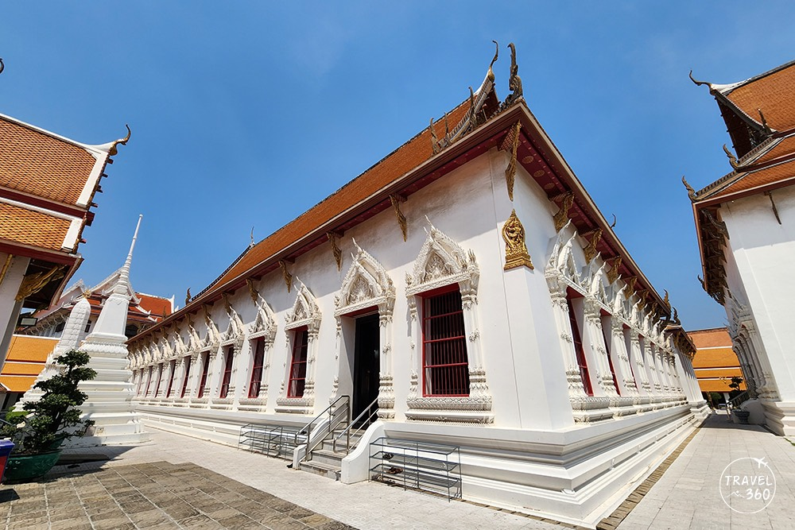
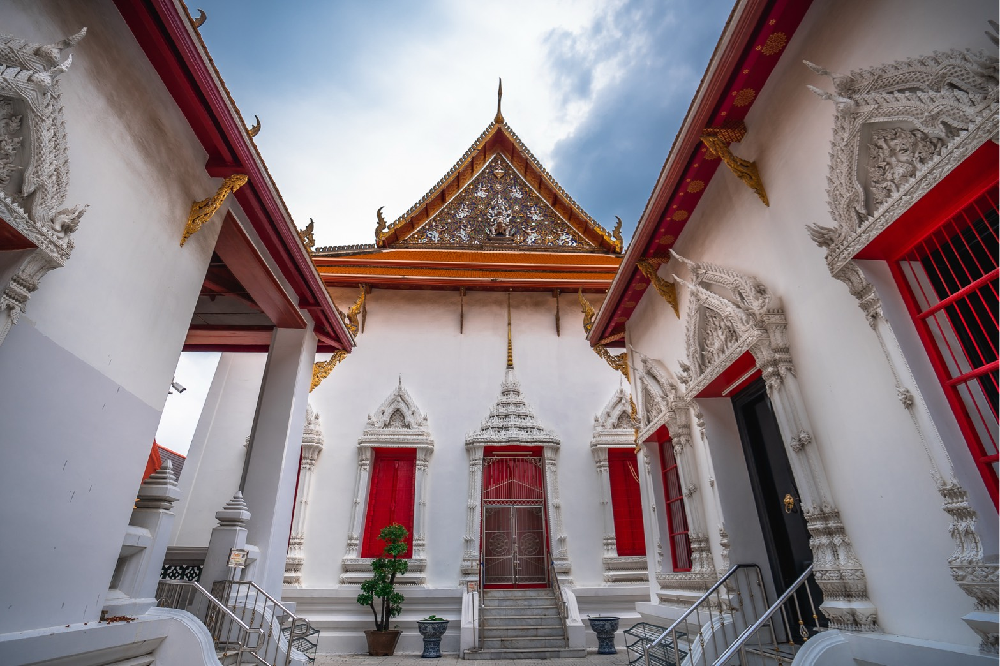

สถานที่สำคัญ



วัดมหาธาตุยุวราชรังสฤษฎิ์ เดิมชื่อว่า “วัดสลัก” ผู้สร้างวัดแห่งนี้ไม่ปรากฏนาม แต่สันนิษฐานว่ามีมาแต่ครั้งกรุงเก่า (กรุงศรีอยุธยา) เมื่อสมเด็จพระบวรราชเจ้า มหาสุรสิงหนาท ทรงมาพบวัดนี้แล้ว ได้ทรงบูรณปฏิสังขรณ์และสร้างถาวรวัตถุขึ้นมาใหม่ ทรงสถาปนาวัดนี้ขึ้นเป็นพระอารามหลวงแห่งแรกในยุคกรุงรัตนโกสินทร์ และทรงขอพระราชทานนามจากรัชกาลที่ ๑ ว่า “วัดนิพพานาราม”
ต่อมา พระบาทสมเด็จพระพุทธยอดฟ้าจุฬาโลกมหาราช โปรดให้ทำการสังคายนาพระไตรปิฎกขึ้น ณ วัดแห่งนี้ จึงได้เปลี่ยนนามเป็น “วัดพระศรีสรรเพชญ์” และต่อมาทรงจัดให้มีการศึกษาพระปริยัติธรรมและสอบไล่ความรู้ จึงโปรดให้เปลี่ยนนามอีกครั้งว่า “วัดพระศรีรัตนมหาธาตุ ราชวรมหาวิหาร” ตามแบบอย่างวัดสำคัญในสมัยกรุงเก่าเมื่อปี พ.ศ. ๒๓๔๖ จนกระทั่งทรงโปรดให้เรียกสั้นๆ ว่า “วัดมหาธาตุ” เพื่อให้เป็นชื่อหลักของพระนครที่มีสถิตของสมเด็จพระสังฆราช
ในสมัยรัชกาลที่ ๕ เมื่อสมเด็จพระบรมโอรสาธิราชเจ้าฟ้ามหาวชิรุณหิศสวรรคต พระองค์ทรงพระราชทานพระราชทรัพย์ส่วนพระองค์เพื่อปฏิสังขรณ์วัดมหาธาตุ จึงโปรดให้เพิ่มสร้อยนามพระอารามเพื่อเฉลิมพระเกียรติยศว่า “วัดมหาธาตุ ยุวราชรังสฤษฎิ์ ราชวรมหาวิหาร” ซึ่งเป็นนามที่ใช้มาจนถึงปัจจุบัน
ร่วมสัมผัสความวิจิตรของพุทธศิลป์และความยิ่งใหญ่ทางประวัติศาสตร์
3 ถนนมหาราช แขวงพระบรมมหาราชวัง เขตพระนคร กรุงเทพมหานคร 10200 (บริเวณท่าพระจันทร์)
เปิดให้เข้าชม: 08:00 – 18:00 น. (ทุกวัน)
เบอร์โทรศัพท์: 093-549-9251